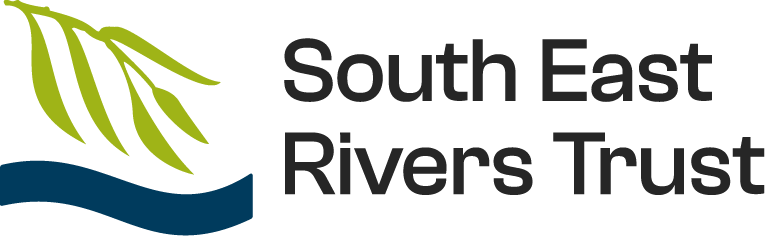

St George's Weybridge × South East Rivers Trust
The River Bourne Project is a long-term environmental restoration initiative at St George’s Weybridge, working in partnership with the South East Rivers Trust. It allows students to take part in real-world conservation work while developing a deeper understanding of river ecosystems.
The aim of the project is to monitor, restore and improve the health of the River Bourne through hands-on fieldwork, data collection and environmental action.
Healthy rivers are essential ecosystems that support biodiversity, regulate water quality and reduce flood risk. The River Bourne acts as a vital wildlife corridor connecting habitats across Surrey.
Restoration improves oxygen levels, sediment balance and habitat diversity, allowing species such as fish, aquatic insects and birds to return and thrive.
For St George’s Weybridge, the project demonstrates a commitment to sustainability, outdoor learning and environmental stewardship. Students gain valuable experience while making a genuine contribution to the local environment.
Working on the River Bourne Project gives students the opportunity to experience environmental science and conservation in a way that simply cannot be replicated in a classroom. Rather than learning about river systems from textbooks alone, students are able to work directly within a real ecosystem and see how rivers function first-hand.
Students collect and analyse environmental data, investigate river processes and learn how restoration projects can improve habitats for wildlife. Practical fieldwork helps develop a deeper understanding of sustainability, biodiversity and environmental management.
The project builds teamwork, leadership, communication and problem-solving skills while encouraging responsibility for the environment. It also provides insight into careers linked to geography, conservation, ecology and sustainability.
A 2016 Environment Agency survey found the river was “not habitable for fish”. Restoration focused on reversing channel straightening and dredging impacts.
Milestones:
Final result: 6 deflectors, 3 berms, 2 V-deflectors, 1 bank, 1 backwater.
A key part of the River Bourne Project is continuous monitoring. Rivers are dynamic systems, meaning conditions change seasonally and over time.
Students revisit the same sites to track ecological change, compare datasets and identify long-term trends in water quality and biodiversity.
This ongoing research helps determine the success of restoration efforts and provides valuable scientific evidence for future river management strategies.
Oli Rogers
Education and Engagement Officer – Working with Communities
Oli Rogers is a qualified teacher with a degree in Geology and Physical Geography. He has experience teaching students from Key Stage 3 through to A Level and has spent recent years working as an outdoor educator, helping young people connect directly with nature.
Through the River Bourne Project, Oli supports students in developing practical fieldwork skills, understanding river ecosystems and taking part in meaningful conservation work. His enthusiasm for the outdoors and environmental education has helped make the project both engaging and inspiring.